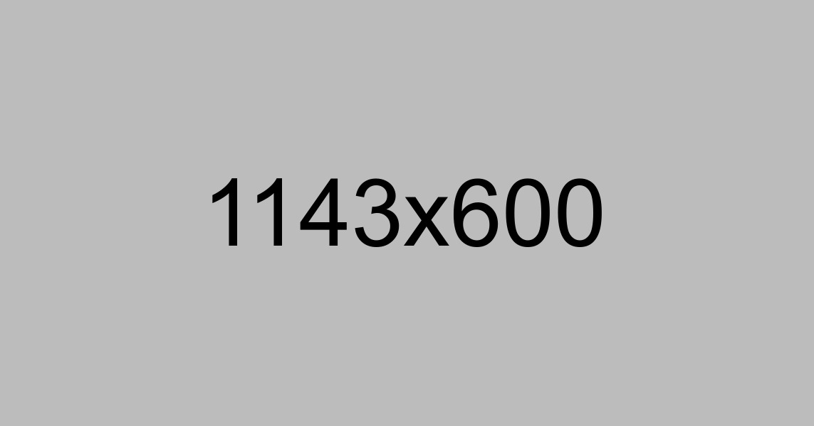

Минфин предложил вдвое увеличить квоту малого бизнеса в закупках государства — с 15% до 30%. Такая инициатива направлена первому вице-премьеру Андрею Белоусову — в случае одобрения она будет погружена в готовящийся «оптимизационный» пакет поправок к закону о госзакупках (ФЗ-44). Внесение этого законопроекта в Госдуму, по словам замминистра финансов Алексея Лаврова, запланировано на 16 июля. В поправках уже есть меры по снижению финансовой нагрузки на малый бизнес. Например, о выдаче независимых гарантий от региональных гарантийных организаций и ВЭБ.РФ для обеспечения обязательств по контрактам — вдобавок к банковским гарантиям.
Напомним, для таких закупок предусмотрен специальный регламент: отдельные обеспечительные процедуры, сокращенный срок оплаты поставок заказчиком в пределах 15 дней и так далее. По словам главы «Опоры России» Александра Калинина, предприниматели давно предлагали повысить квоту, ведь поддержка спроса на продукцию малого бизнеса помогает достижению целей профильного нацпроекта — росту доли МСП в отечественном производстве до 32,5% к 2024 году.
Министерство финансов предложило удвоить обязательную квоту малого и среднего бизнеса в закупках государства, увеличив ее с 15% до 30%
Член генсовета «Деловой России» Алексей Мостовщиков отмечает, что господдержка МСП должна предусматривать в том числе и контроль за госзаказчиками: «Предприниматели отмечают множество лазеек при госзакупках. К примеру, госзаказчики выставляют специфичные требования, чтобы заказ получали известные им поставщики». Кроме того, бизнес надеется на повышение квоты закупок не только государства, но и госкомпаний (по ФЗ-223). Пока, впрочем, по данным “Ъ”, по итогам дискуссий с чиновниками в период пандемии предприниматели согласились с логикой Минфина — приступить к правке ФЗ-223 лишь после доработки ФЗ-44. В самом Минфине при этом говорят, что после недавнего повышения квоты МСП при закупках госкомпаний до 20% ее нового увеличения не планируется.
Вчера правительство рассмотрело проект поправок к ФЗ-223 об обязанности заказчика включать в договоры информацию о стране происхождение товаров. Эти сведения позволят правительству контролировать выполнение госкомпаниями свежей нормы об обязательной доле закупок у отечественных производителей — перечень квотируемой продукции и размер квот Белому дому еще только предстоит определить. Одновременно такая информация позволит учесть долю закупок у российских поставщиков по нацпроектам — идеи об их квотировании также активно обсуждаются сторонниками протекционизма.

Коммерсант (03.07.2020)
Наряду с регуляторной поддержкой бизнеса власти продолжают делать финансовые вливания в социальную сферу. Вчера кроме правки бюджетного законодательства ради увеличения госрасходов правительство распределило новую порцию средств для помощи населению. В связи с продлением срока действия «президентских выплат» премьер Михаил Мишустин сообщил о выделении из резервного фонда еще 7,5 млрд руб. для врачей, работающих с больными коронавирусом, а также 3,5 млрд руб. для соцработников. Также власти выделяют более 4 млрд руб. на создание временных рабочих мест, включая организацию временной работы на предприятиях, переведших сотрудников на режим неполной занятости. В общей сложности, по оценке Белого дома, это позволит временно трудоустроить более 80 тыс. человек.